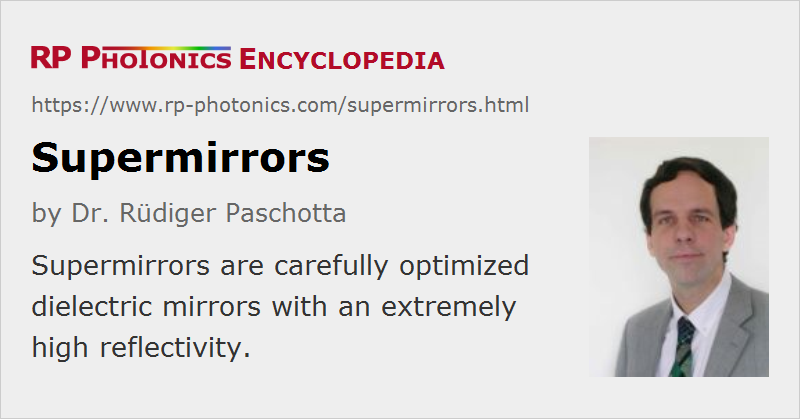

Supermirrors
Definition: laser mirrors with a very high reflectivity
More general term: mirrors
German: Superspiegel
How to cite the article; suggest additional literature
Author: Dr. Rüdiger Paschotta
An optical supermirror is a Bragg mirror (typically a dielectric mirror) that is optimized for an extremely high reflectivity – in extreme cases, larger than 99.9999%. This means that the reflection losses are below 1 ppm. Two such ultra-high reflectivity mirrors form a Fabry–Pérot interferometer with a finesse larger than 3 millions and a strong field enhancement within the cavity. The Q factor of a supermirror cavity can be above 1011.
Although most supermirrors are dielectric mirrors (often with Ta2O5/SiO2 layers made by ion beam sputtering), there are also crystalline mirrors [6] with very high peak reflectivities of e.g. 99.9997% [7].
Supermirrors can be used in certain quantum optics experiments and for some measurements with extremely high precision, e.g. involving high-finesse interferometers or optical gyroscopes.
The term supermirror is also common for X-ray and neutron reflectors. In that field, it was originally very difficult to achieve high reflectance values. Multilayer mirrors have then been developed, which offer much better performance. Still, the achieved peak reflectivities are far lower in this regime, comparing with optical supermirrors.
Suppliers
The RP Photonics Buyer's Guide contains 5 suppliers for supermirrors. Among them:
Questions and Comments from Users
Here you can submit questions and comments. As far as they get accepted by the author, they will appear above this paragraph together with the author’s answer. The author will decide on acceptance based on certain criteria. Essentially, the issue must be of sufficiently broad interest.
Please do not enter personal data here; we would otherwise delete it soon. (See also our privacy declaration.) If you wish to receive personal feedback or consultancy from the author, please contact him e.g. via e-mail.
By submitting the information, you give your consent to the potential publication of your inputs on our website according to our rules. (If you later retract your consent, we will delete those inputs.) As your inputs are first reviewed by the author, they may be published with some delay.
Bibliography
| [1] | O. Schaerpf, “Comparison of theoretical and experimental behaviour of supermirrors and discussion of limitations”, Physica B: Phys. Cond. Matter 156, 631 (1989), doi:10.1016/0921-4526(89)90750-3 |
| [2] | R. P. Stanley et al., “Ultrahigh finesse microcavity with distributed Bragg reflectors”, Appl. Phys. Lett. 65, 1883 (1994), doi:10.1063/1.112877 |
| [3] | C. J. Hood, H. J. Kimble, and J. Ye, “Characterization of high-finesse mirrors: Loss, phase shifts, and mode structure in an optical cavity”, Phys. Rev. A64 (3), 033804 (2001), doi:10.1103/PhysRevA.64.033804 |
| [4] | A. Schliesser et al., “Complete characterization of a broadband high-finesse cavity using an optical frequency comb”, Opt. Express 14 (13), 5975 (2006), doi:10.1364/OE.14.005975 |
| [5] | A. Muller et al., “Ultrahigh-finesse, low-mode-volume Fabry–Pérot microcavity”, Opt. Lett. 35 (13), 2293 (2010), doi:10.1364/OL.35.002293 |
| [6] | G. D. Cole et al., “Tenfold reduction of Brownian noise in high-reflectivity optical coatings”, Nature Photonics 7, 644 (2013), doi:10.1038/nphoton.2013.174 |
| [7] | G. D. Cole et al., “High-performance near- and mid-infrared crystalline coatings”, arxiv.org 1604.00065 |
See also: mirrors, dielectric mirrors, crystalline mirrors, Fabry–Pérot interferometers, finesse, Q factor
and other articles in the category photonic devices
|  |
If you like this page, please share the link with your friends and colleagues, e.g. via social media:
These sharing buttons are implemented in a privacy-friendly way!